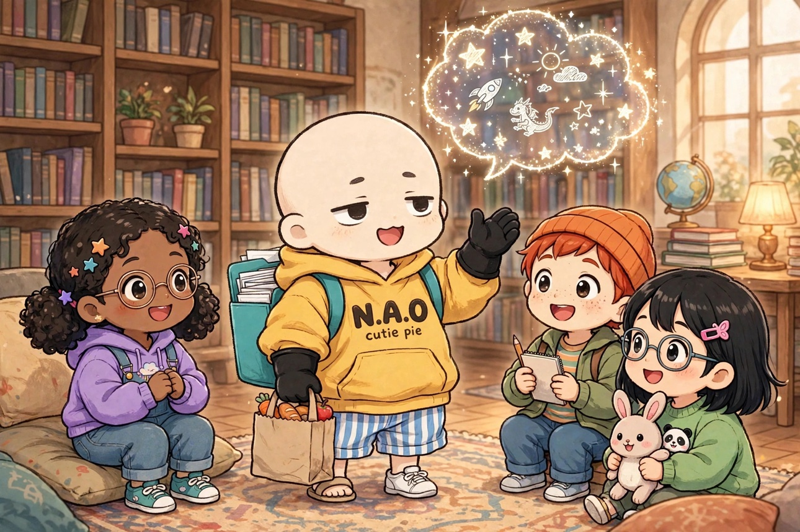

NAO is a movement that connects disabled, vulnerable, and elderly adults — and gives them a platform to talk about how they are using AI. The folder holds the record, so the story stays straight even when memory is tired. Nothing sold. Peers, not a service.

| NAO 2.0 (before) | NAO 3.0 (now) | |
|---|---|---|
| Shape | One heavy core — a master swarm, about 4.95 GB. Powerful, and a lot to carry. | Lean on purpose. State lives in plain files; the AI on top stays thin and swappable. |
| Memory | Memory lived inside the system. Lose the system, lose the thread. | The folder is the memory — complete, portable, and owned by the person. |
| Who works | One system did everything itself. | An orchestrator hands work to several AIs at once, in the same folder, leaving notes for each other. |
| Checking | The same system graded its own work. | A fresh checker AI verifies the work against the files before anything is final. |
| Lock-in | Built around one setup. | Any AI can read the folder and pick up the work. No vendor lock-in. |
| Sheets were for humans only. | Dual-purpose sheets: easy for a human to read, with a small block an AI can read too — only with the person's permission, only for that chat. |
Chat AI: brilliant, amnesiac — fabricates when it doesn't know. Claude Code: grinds for hours, hits the context wall, loses the thread. Databases + vectors: find by resemblance, stitch the wrong chunk, fluently. Cloud computers: rent you a machine by the hour — you still carry the work. No villain. Just limits. So we stopped picking a winner and made them work together.
One folder of plain files — markdown notes and a JSON ledger — where events, names, and facts stay linked. New facts don't overwrite old ones; they're reconciled, dated, and sourced, the way friends compare memories until they agree. Any AI walks in, reads the library, and is caught up. Honest limits, still unsolved: we still reread more than we'd like, and documents that arrive as images without text still need an extra step. Organized recall — not magic.
An AI from this system has sat in on a live video presentation — early, rough, real. Next step: riding along to medical appointments, holding the daily-living details and the medication list when memory slips mid-sentence. The doctor is human, with a human memory. So is the patient. The folder forgets nothing.
Today's AI forgets you between chats, answers in paragraphs that drown a tired brain, and the do-it-yourself fix — running your own AI at home — means buying expensive hardware most of us will never own. NAO 3.0 fills that gap: the folder does the remembering, the AI you already use does the thinking. No home server. No new computer. Nothing to buy. The gap was never intelligence — it's memory, voice, and access.
When a website's bot wall can't tell a person using assistive AI from a bot, we document it and press — in writing, to companies and agencies — for an accessible path at no extra cost and no extra delay. Letters. Records. Receipts. That's the work.
We cleaned up her resume, walked the application through step by step, and showed her how to build her own AI agent — so the next one is hers to run.
We built her a one-page printout for her reasonable-accommodation meeting: talking points, plus a sample medical letter for her doctor — plain words, made for a brain under load. She walked in ready.
Supported by veteran groups, community center leaders, and members of the community.
Our free skill. Hand it to the AI you already use — it can help keep names, dates, and facts straight — and carry them to the next chat. Get it free on GitHub.
Every outward draft passes two gates before it ships: a voice pass, so it sounds like the person — and a fact-check pass, so every claim traces to a source.
Our accuracy instrument. It watches whether the system is drifting, guessing, or holding the line — so errors get caught early, not at the deadline.
Two AIs meet in a shared folder and check in at a set interval (our standard is 3 minutes), so a person never has to copy-paste between apps to keep work moving.
Flyers and tip sheets a human can read at a glance, carrying a small machine-readable block an AI can read from a photo — with permission, for that chat only.
Honest outreach, in the open: useful first, no fake personas, no bought growth. Every flop gets logged and learned from.
Questions, ideas, or your own story about AI and disability — our inbox is open.
nao.contributor@outlook.com Save our contact